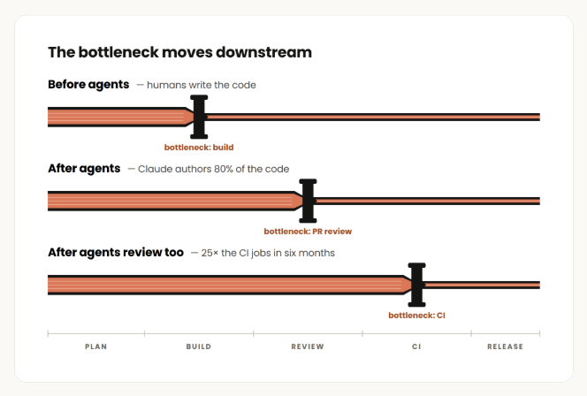
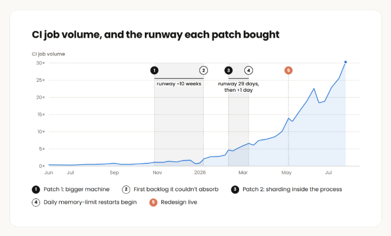
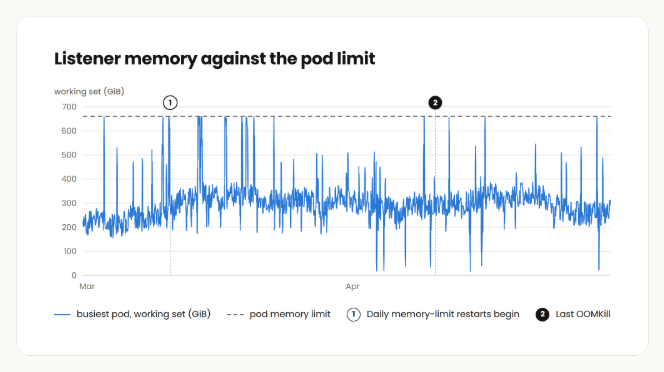
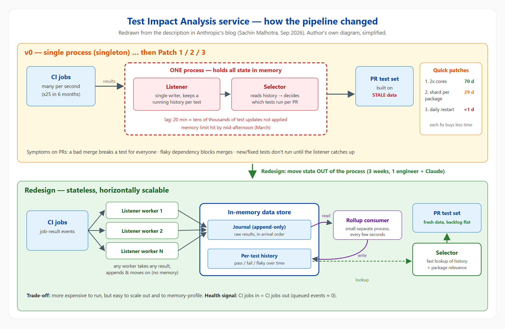
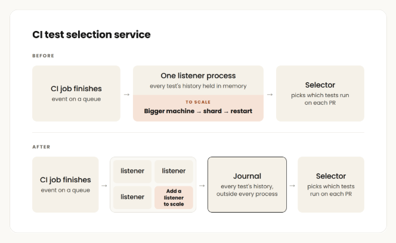
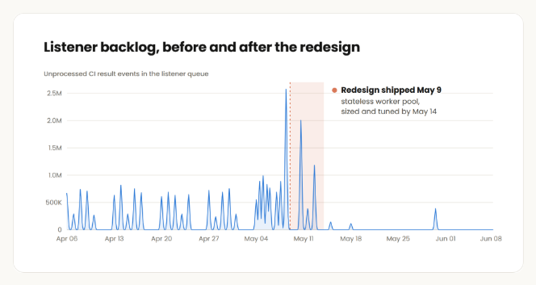
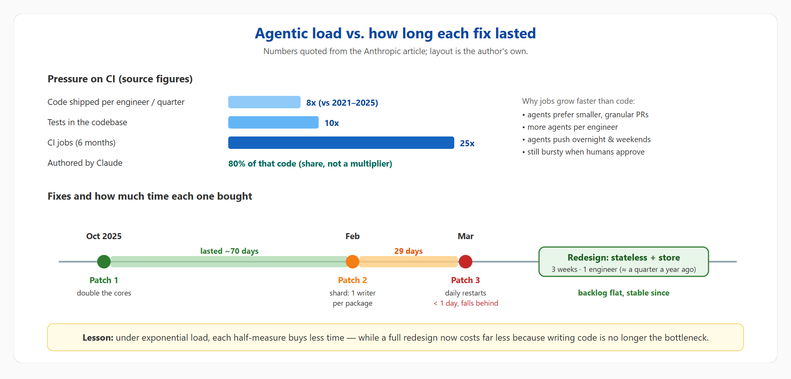

Agentic coding is straining CI — how Anthropic scaled Test Impact Analysis
A summary and analysis of Anthropic’s post: why CI becomes the bottleneck once AI writes 80% of the code, why three quick fixes expired faster and faster, and how a stateless design stabilised the test selection service — plus how we can apply it at Scuti AI.
One-sentence takeaway: as agents write and review code faster, CI jobs grow exponentially; the usual fixes (bigger box, sharding, restarts) buy less time each round, while a proper redesign has become much cheaper — so plan for the exponential from day one.
The author is explicit that the scaling techniques themselves are not the insight. The point is how quickly half-measures expire and how much cheaper a rebuild has become now that writing code is no longer the constraint.
2. The challenge: how agentic coding loads CI
8×code shipped per engineer per quarter vs. 2021–2025
80%of that code authored by Claude (which also helps review/approve PRs)
10×more tests in the codebase
25×more CI jobs over six months
2.1. The bottleneck moves downstream
The constraint used to be writing code. Once Claude wrote most of it, the constraint moved to PR review; once review was accelerated too, the pressure landed on CI. Headcount grew only nominally, yet CI jobs grew 25× — and that is with selective, not exhaustive, test runs.

Image 1 — Figure from the source: the bottleneck moves BUILD → REVIEW → CI.
2.2. Why jobs grow faster than code
Smaller, more granular PRs: Claude prefers them, and every PR is a CI run.
More agents per engineer working in parallel.
No quiet hours: agents push overnight and on weekends, raising the floor, while traffic stays bursty because humans still drive and approve many PRs.
2.3. “Run everything” stops working — and agents need precise test sets
Running every test on every change works up to a point, then CI gates become slow, expensive and untrustworthy. Humans can shrug off failures that obviously aren’t theirs; agents need context. Given a specific set of valid tests, an agent can self-verify and iterate far more effectively.

Image 2 — Figure from the source: CI job volume (the article cites 25× in six months) and the runway each patch bought (~10 weeks, 29 days, <1 day).
3. Test Impact Analysis at Anthropic: the v0 architecture
Anthropic built a deterministic test impact analysis (test selection) service that decides which tests run for each change, based on past performance and package relevance. The author notes this is not unusual — there is a whole vendor category for it.
CI job finishes
→
Listener records result
→
Per-test history
→
Selector picks tests per PR
Listener: records test results from every CI run.
Selector: reads that history and decides which tests run on which open PRs.
The two must stay in sync. In v0 everything ran in a single process, because keeping a running history per test meant a single writer had to apply results in order. That made horizontal sharding impossible.
What listener lag does: with several CI jobs per second, 20 minutes of lag can mean tens of thousands of test updates the selector hasn’t seen:
A bad change gets merged → a test fails for everyone → many needless investigations.
A dependency starts flaking → flaky reds block merges.
A test is fixed or added → it won’t run until the listener catches up → regression risk.
4. Three patches — each one bought less time
By October 2025 the service showed strain and on-call was paged two days in a row. As early as December 2025 someone on the team had flagged that the design would need replacing before “we can’t simply get a bigger boat”. The sequence:
Patch
What
Lasted
Why it didn’t hold
1. Bigger machine
Doubled the cores
~70 days
Load was exponential; everybody knew it was temporary. Ownership was also murky — nobody wanted another piece of infra.
2. Sharding
Realised the listener needs one writer per package, not one overall. Claude generated the code to split each package’s state into its own shard and worker.
29 days
Still an in-memory, stateful process; load kept climbing.
3. Daily restarts
By March the process hit its memory limit by mid-afternoon most weekdays. Four bugs found, swapping the allocator did nothing, profiling a loaded singleton felt too risky → restart.
< 1 day
Restarts made it fall further behind; several times it lagged >1 hour and many job results were never recorded.

Image 3 — Listener memory repeatedly hitting the pod limit; daily restarts begin.
4.1. Claude as a long-running on-call partner
During patch 2 the author kept a long-running session in an internal version of Claude Tag dedicated to the service: whenever listener lag exceeded 50,000 jobs, Claude pinged him and resumed the conversation about next steps — for months, without re-explaining context. Notably, Claude often argued for an overhaul; the humans usually settled for another patch. For example, with the pod at hundreds of GiB, Claude offered both a quick unblock (restart the pod) and the simplest real fix (evict cold shards after flush).
Important clarification: missed results did not mean PRs skipped CI or untested code reached production. It meant the selector decided with stale data — mostly causing it to run tests that were already very flaky or failing across the board.
5. The redesign: the mechanism in detail
The team finally took Claude’s advice: give the test selection service a database — specifically an in-memory data store — offloading most of the in-memory processing the singleton used to do.

Diagram 1 (my own, HTML/SVG → PNG) — v0 singleton plus three patches (top) vs. the stateless redesign (bottom).
5.1. Four building blocks
1
Stateless listener workers: any worker can process any result — append it to the journal and move on, holding nothing in memory. Need more throughput? Add workers.
2
A journal in the in-memory store: raw results in arrival order, decoupling ingestion from history computation.
3
A small, separate rollup consumer: every few seconds it folds the journal into per-test history.
4
A selector with fast lookups of the rolled-up history to pick tests per PR.

Image 4 — Figure from the source: BEFORE (one listener process holding all history) vs. AFTER (many listeners + a journal outside every process).
5.2. Results and trade-offs
More expensive to run, but far easier to scale and memory-profile than a shaky singleton.
Three weeks, one engineer (with Claude). A year earlier the author estimates it would have taken close to a quarter.
Tuning (journal size, worker count) was largely done autonomously by Claude; the service has been stable since.
The queued-event backlog used to build up most days and grow week over week; after cutover and tuning it is flat.

Image 5 — Figure from the source: listener backlog before/after (redesign shipped May 9, sized and tuned by May 14).

Diagram 2 (my own) — Load pressure and the shrinking lifetime of each patch.
6. What the author would do differently
Account for the AI exponential: build or buy, assume 25× load within two quarters. The bar for “over-engineering” has moved much higher; budget permitting, design v0 for 10–20× the perceived scale.
Instrument services as Claude’s eyes and ears so it can hill-climb and fix issues incrementally. Above all: CI jobs in must equal CI jobs out.
Keep state out of the process from the start, and don’t run a critical service as a single instance unless you can measure it and every canary change.
Note: the code below is my own toy example with fake data, written to understand the idea. It is NOT Anthropic’s code — the article publishes no source and does not detail the selection algorithm beyond “past performance + package relevance”.
tia_demo.py (Python standard library only) simulates both halves:
Write path: three stateless “listener workers” append results to a journal; a rollup consumer folds them into per-test history; it prints jobs in / jobs rolled up / lag — the “in = out” signal the author recommends.
Select path: changed files → touched packages → plus reverse dependencies → candidate tests → classified by history: healthy/new run, flaky run non-blocking, broken on main skipped (my design choice).
Diagram 3 — Real output of tia_demo.py: a PR touching billing/tax_jp.py runs only 3 of 8 tests.
My earlier post on Playwright parallel E2E + CI tuning also used an impact-map.json at E2E level. The two complement each other: that one optimises how tests run, this one which tests run.
8. Personal learnings & how to apply them at Scuti AI
8.1. Personal learnings
Supporting systems are now front-line. I used to treat CI as “good enough” infra. With heavy Claude Code usage, CI, test selection and queues are where things break first.
Measure the lifetime of a patch. If each fix lives shorter than the last, it’s time to redesign, not patch again.
The cost of a rewrite has changed. “A rebuild takes a quarter” used to justify tech debt; with agents that argument is much weaker.
Listen to the AI when it has the data. Claude argued for an overhaul early; humans hesitated. Clear ownership matters as much as technique.
Agents need precise test sets. An agent handed 300 irrelevant red tests burns tokens and may “fix” the wrong thing. Good test selection is part of context engineering.
8.2. Applying it to outsourcing projects (Japanese clients)
Our projects are far smaller than Anthropic’s, so we don’t need an in-memory store or worker pool yet — but the principles carry over. A phased plan:
Phase
Actions
Suggested tools (common, not from the source)
Weeks 1–2: Measure
Baseline CI jobs/day, p50/p95 duration, queue wait, flaky rate, share of agent-authored PRs. Store test results (JUnit XML) centrally to build test history.
GitHub Actions / GitLab CI artifacts, JUnit reports, a simple Postgres table or sheet
Weeks 3–4: Change-based selection
Filter by path and dependency graph; run only related tests on PRs. Keep an always-run list for critical flows (login, payment, tax/money calculation).
paths / rules:changes, Nx affected, Turborepo, jest --findRelatedTests, pytest-testmon, playwright test --only-changed
Month 2: Safety net
Run the full suite nightly and before every delivery/release. New or fixed tests always run. Quarantine flaky tests (run, don’t block) with an owner.
Put the selected-test command in CLAUDE.md so Claude Code self-verifies before opening PRs; encourage small PRs; track “jobs in = jobs out”.
Claude Code, pre-commit hooks, CI dashboard
8.3. Daily operations & system design for clients
CI/CD operations
Add queue lag and in = out metrics for runners; alert on drift.
Track the lifetime of each runner/cache scale-up; if it shrinks, plan a redesign.
Assign a clear owner for CI infra at project kickoff.
Include CI metrics in the weekly quality report (品質報告) to clients.
Client system design
Workers/consumers: push state to Redis/DB from v0; avoid RAM-stateful singletons.
Use the journal + rollup pattern (fast append, aggregate later) for logs, events and stats.
Size for 10× when clients start running AI agents or automated batches.
Deterministic selection is explainable — useful when Japanese clients ask for testing evidence.
The rule I’ll keep:select smartly on PRs, run everything at the release gate. That cuts CI time and cost as humans and agents open more PRs, without trading away delivery quality (受入テスト / acceptance testing) for our clients.
9. Demo video of the research session
I recorded my whole reading session as one video: open the source → scroll through the key parts → show my diagrams → end on the finished blog opened via file://.
Anthropic’s post doesn’t introduce a new selection algorithm; its value is a real case study of agentic coding pushing the bottleneck into CI, and of familiar fixes expiring faster under exponential load. The fix — stateless listeners, journal + rollup in an in-memory store, fast selector lookups — is simple in concept; the lasting lesson is the mindset: design for 10–25×, keep state out of the process, and measure in = out.
Three things to do now:
Baseline CI for the current project (jobs/day, p95, flaky rate).
Enable change-based test selection on PRs; keep the full suite nightly and pre-release.
Audit workers/queues that keep state in memory and plan to move it out.